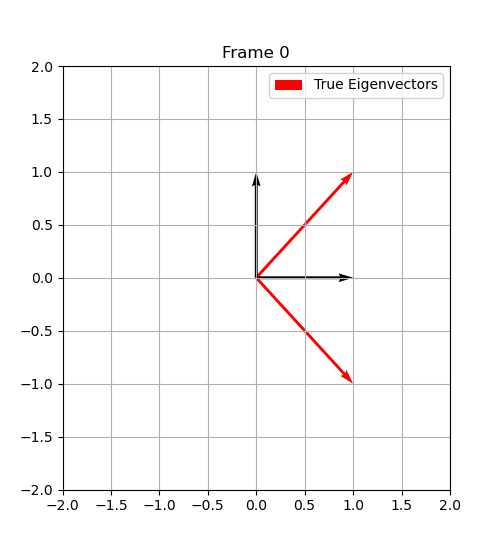
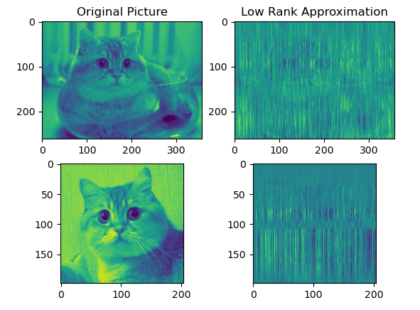

Look at the pictures of my previous projects below.
If you are interested you can click here to access my prior work experience.
And you can click here to access my prior education and research experience.
Below, I animated the orthogonal iteration algorithm which finds eigenvectors of symmetric matrices.
Background: The eigenvectors of a symmetric matrix can be found by continuously
multiplying a set of random vectors by that symmetric matrix and orthogonalizing
the vectors after every multiplication. Notice how the animations alternate
between bringing the vectors closer (matrix multiplication) and then
pushing them away from each other until they are 90 degrees from another (orthogonalization).
I wrote the source code for this animation and it can be found here: Jupyter Notebook

The cat below is really cute and this is his YouTube channel
The pictures on the left are original pictures of the cat. The pictures on the right are compressed pictures of the cat.
Notice how the compressed images still show his big beautiful eyes!
I compressed these images by implementing singular value decomposition from scratch
using the orthogonal iteration algorithm from the first animation.
Source Code Here
